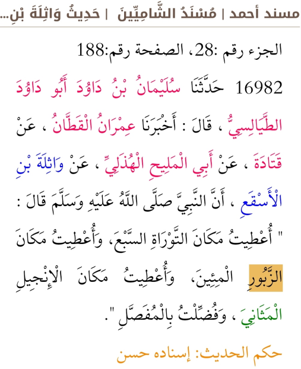
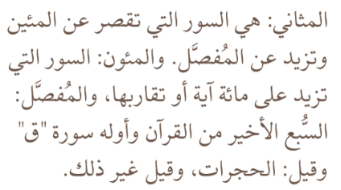

Мусульманин
Религия ислам
بسم الله الرحمن الرحيم
Печатное издание Корана в Петербурге
Слава Аллаху, на сайте теперь размещено отсканированное старое издание Священного Корана, изданное
в Петербурге в 1809 году.
Это издание примечательно тем, что содержит примечания на полях из старых рукописных книг по разным чтениям (кыраат) и из "аль-гараиб" или "гарибулькуран"
- книг толкования непонятных слов Корана.
Замечу, что рукописные мусхафы (книги, в которых записан Коран) возрастом 150 лет продаются за несколько тысяч долларов США. А тут мы имеем электронную копию старого печатного издания возрастом 216 солнечных лет, что является большой редкостью и ценностью. Очень интересно находить в комментариях на полях то, что в арабском мире было издано в печатных книгах только в 20-м веке, что подкрепляет достоверность передачи этих книг за счёт разных путей передачи в разных странах.
А вот и ссылки для скачивания и просмотра:
Хвала Аллаху Всевышнему! Он охраняет Священный Коран от искажений.
Да воздаст Аллах благом и прощением всем мусульманам и мусульманкам, прикладывающим усилия для передачи
ниспосланного последующим поколениям. Интересно, что этот Мусхаф пережил несколько поколений как царской России,
так и атеистического Советского Союза. Его издали и читали, когда Пушкину было 10 лет, и его читают сегодня, в 2025 году (1446-1447 г. от хиджры).
Месяц Раджаб 1446 года - 19-е января 2025 года.
Посланники الرسل
بسم الله الرحمن الرحيم
С именем Аллаха Милостивого Благого.
Русуль رسل - это слово переводится с арабского языка как посланники.
Вера в посланников
Посланникам Аллаха, мир им и благословения Аллаха, Всевышний ниспослал откровение,
Писания и приказал передать это людям.
Ниспосланное является руководством для жизни верующих, разъяснением смысла их жизни.
Мы веруем в то, что все посланники – люди и что все они сотворены и не обладают божественными качествами.
Всевышний Аллах сообщил, что Нух, первый из посланников, сказал:
«Я не говорю вам, что владею сокровищницами Аллаха.
Я не ведаю сокровенное. Я не говорю, что являюсь ангелом»
Священный Коран, сура «Худ», аят 31.
Все посланники Всевышнего призывали людей поклоняться только одному Аллаху Создателю и Творцу всех миров,
подчиняться приказам Аллаха, делая то, что предписано, и сторонясь того, что Он запретил.
Эта покорность Ему, нашему Милостивому Хозяину, называется на языке последнего откровения "Аль-Ислям",
а по-русски говорят "ислам".
Покорный Господу Богу именуется "муслим", что переводится с арабского языка как "покорный", от этого произошло русское слово мусульманин.
Пять великих посланников
Нух, Ибрахим, Муса, Иса (Иисус сын Марии) и Мухаммад,
да благословит их Всевышний всеми благословениями и да ниспошлёт им мир, это пять великих посланников Аллаха.
Нух (Ной) عليه السلام первый посланник Аллаха к людям. Аллах спас его с верующими на корабле и потопил многобожников.
Ибрахим (Авраам) عليه السلام, отец народов, построил мечеть в Мекке и затем в Иерусалиме, как и все пророки, призывал поклоняться одному Аллаху. Его дети Исмаил عليه السلام и Исхак عليه السلام, а также его внук Исраиль (Якуб)عليه السلام и его правнук Юсуф عليه السلام были пророками и посланниками Аллаха.
Муса (Моисей) عليه السلام, Иса (Иисус) عليه السلام и Мухаммад صلى الله عليه وسلم из потомства Ибрахима عليه السلام, им были дарованы Писания: Таврат (Тора), Евангелие и Коран соответственно.
Священный Коран охраняется Аллахом Всевышним от искажений. Мухаммад صلى الله عليه وسلم был послан Всевышним уже как последний пророк и посланник. Он посланник Аллаха ко всему человечеству без исключения.
والحمد لله رب العالمين
И вся хвала Аллаху Хозяину миров!
بسم الله الرحمن الرحيم

مسند أحمد
16982
عن واثلة بن الأسقع ، أن النبي صلى الله عليه وسلم قال : " أعطيت مكان التوراة السبع، وأعطيت مكان الزبور المئين، وأعطيت مكان الإنجيل المثاني ، وفضلت بالمفصل ".
حكم الحديث: إسناده حسن

والحمد لله رب العالمين
Что такое религиозное знание
Во имя Аллаха Милостивого Благого.
ШамсуДдин Мухаммаду бну Аби Бакри бни Аййуб Аддимашкий известный как Ибн Коййим АльДжавзиййа (ابن قيم الجوزية)
говорил и писал, что знание это слово Аллаха, слова посланника Аллаха и слова сподвижников.
Ахмад бин Ханбаль указывал, что основа сунны это следование сподвижникам.
Многие зашли в разные религиозные заблуждения от незнания слов, понимания и практики сподвижников.
То есть они поняли аяты и хадисы не так как их понимали, практиковали и разъяснали сподвижники пророка صلى الله عليه وسلم.
Согласно Корану и разъяснениям посланника Аллаха صلى الله عليه وسلم мусульмане должны следовать пути сподвижников.
См. Коран сура 4, аят 115.
وَمَنْ يُشَاقِقِ الرَّسُولَ مِنْ بَعْدِ مَا تَبَيَّنَ لَهُ الْهُدَى وَيَتَّبِعْ غَيْرَ سَبِيلِ الْمُؤْمِنِينَ نُوَلِّهِ مَا تَوَلَّى وَنُصْلِهِ جَهَنَّمَ وَسَاءَتْ مَصِيرًا
Религия Ахмадия (Индия, Британия) истолковали аяты не на основе разъяснений пророка Мухаммада صلى الله عليه وسلم и пояснений и практики его сподвижников, а на основе различных значений арабских слов и стали немусульманами.
Хариджиты при живых сподвижниках истолковали аяты не так, как понимали сподвижники пророка, обрадованные раем, и обвинили его сподвижников в неверии и стали заблудшими большими грешниками. Прошли века. Современным аналогом этого страшного заблуждения является тайная секта такфиритов*, недавно проявившаяся в зверствах в Ираке и восточной части Сирии. Это высокомерные заблудшие преступники, которые неправильно понимают и искажают "10 деяний, выводящих из ислама", явно противореча словам и делам сподвижников. И не существует и не существовало в истории ни одного учёного, который бы поддержал или одобрил их.
Да упасёт Аллах от всех заблуждений и сект!
* Международное религиозное объединение «Ат-Такфир Валь-Хиджра»
официально запрещено в России,
Египте, Саудовской Аравии и во многих других странах. Эта секта может называться и по другому, но её отличительная черта,
что они всех остальных мусульман считают не мусульманами.
© Мусульманин 2026, Санкт-Петербург